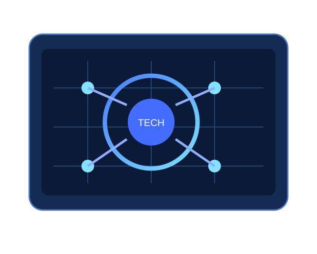
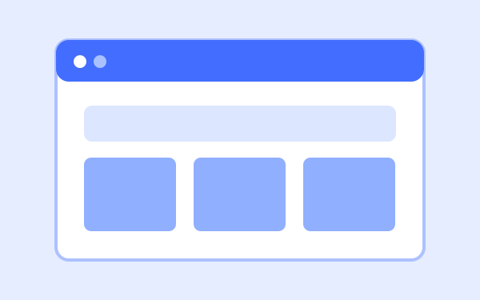
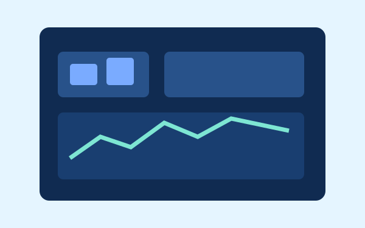

Missão
Facilitar o acesso à tecnologia com soluções úteis e confiáveis.
Transformamos desafios digitais em soluções simples, seguras e eficientes. Sua empresa merece tecnologia que acompanha seu crescimento.

A TechConnect é uma empresa fictícia especializada em aproximar pessoas e negócios das melhores soluções digitais.
Unimos conhecimento técnico, criatividade e atendimento próximo para desenvolver sites, manter equipamentos e orientar empresas em sua transformação digital.
Facilitar o acesso à tecnologia com soluções úteis e confiáveis.
Ser referência em inovação acessível e atendimento de qualidade.
Ética, transparência, colaboração e melhoria contínua.
Da ideia à implementação, cuidamos da tecnologia para você focar no que importa.
Sites modernos, responsivos e pensados para destacar sua marca na internet.
Solicitar serviço ↗Orientação e resolução de problemas para manter sua rotina funcionando.
Solicitar serviço ↗Diagnóstico, prevenção e otimização de equipamentos e sistemas.
Solicitar serviço ↗Estratégias e ferramentas para modernizar processos e ganhar eficiência.
Solicitar serviço ↗Exemplos fictícios de como nossas soluções podem transformar negócios.

Loja virtual com navegação intuitiva e experiência adaptada ao celular.

Painel de indicadores para organizar informações e decisões empresariais.
Proposta de central de atendimento para agilizar solicitações técnicas.
Escutamos suas necessidades antes de propor qualquer solução.
Cada projeto é planejado conforme os objetivos do cliente.
Priorizamos soluções atuais, acessíveis e preparadas para crescer.
Depoimentos ilustrativos criados para fins acadêmicos.
“O novo site deixou a apresentação da nossa loja muito mais clara e profissional.”Mariana CostaCliente fictícia · NovaStore
“Conseguimos organizar melhor nossas informações com uma solução simples de usar.”Rafael AlmeidaCliente fictício · DataFlow
“O atendimento foi objetivo e nos ajudou a entender nossas necessidades técnicas.”Camila FerreiraCliente fictícia · HelpDesk Pro
Conte sua ideia e descubra como a TechConnect pode ajudar.
E-mail ilustrativo
contato@techconnect.example
Telefone fictício
(00) 0000-0000
Atendimento
Segunda a sexta · 9h às 18h